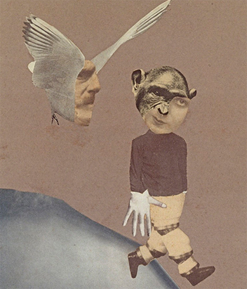

Guidelines
Dadaism er ANTI kunst, så der findes ingen regler som sådan. Udtrykket var dog helt revoultionerende for sin tid, og har haft enorm betydning for alle stilarter efterfølgende. Skulle man lave en guide for, hvordan dadaistisk kunst skal se ud, kunne det lyde:- Non-linært layout
- Forskellige skrifttyper på samme værk
- Aktiv brug af white space
- Foto collager og fotomanipulation
- Kaos-sammenblanding af tekst og billeder
